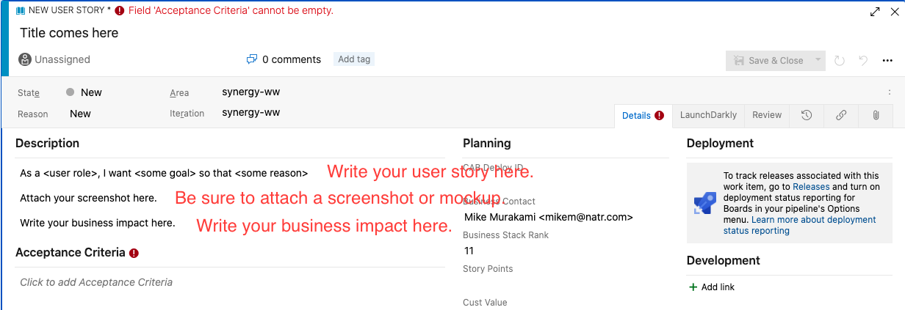

How to Create a User Story
Step 1: Select a backlog
R2 backlog
Web & Services backlog
Mobile backlog
Kiosk backlog
Pickup Center Apps Backlog
Step 2: Click on New Work Item
Step 3: Select "User Story" and write your title
- Select User Stroy
- Write your title
- Make sure "Add to bottom" is selected and then press the blue button
Step 4: Write your User Story
Let's write a good user story. Here is the format of the user story.
As a user role, I want some goal so that some reason .
Here are the examples of user role:
- distributor
- distributor or consumer
- distributor or consumer or retail customer
- subject matter expert
- customer service agent

Check this one

Step 5: Add screenshots or mockups in the Description area
We recommend people to use Tech Smith Capture for screenshots.
Step 6: Add Business Impact in the Description area
Step 7: Write your Acceptance Criteria
QA will use Acceptance Criteria to test a feature/functionality so please be specific.
Given that I am a type of user, when I do some action then I expect some result.
Step 8: Delte Story Points
Story Points should be 0.
Step 9: Add a country tag
| Country | Tag | Country | Tag |
|---|---|---|---|
| Hong Kong | HK | Indonesia | ID |
| Japan | JP | Korea | KR |
| Malaysia | MY | Singapore | SG |
| Thailand | TH | Taiwan | TW |
Step 10: Assign your users story to a product manager
Please assign all the user stories to "Mike Murakami" for now.
Points to be Careful Of
- Make sure the state of a user story is set to "New". Please do not change the state.